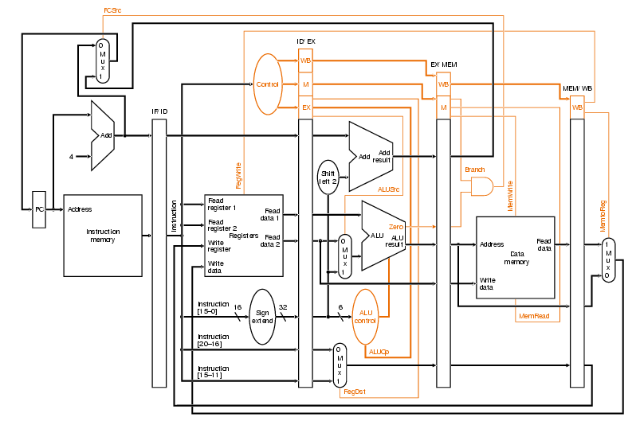
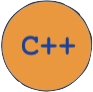

Intro
Glad you could make it. My name is Stephen. I am from Silver Spring, MD
but have been living in Atlanta, GA for the past couple of years as I attend university. I am a senior Computer Engineering student at the
Georgia Institute of Technology, pursuing a minor in Computing and Intelligence.
I am a programmer and a writer,
but most importantly, someone who likes to think outloud, someone who is a tireless seeker of wisdom. I enjoy reading philosophy, listening to audio books and podcasts,
playing video games, fitness, photography, and running around Atlanta looking for adventure. At this point in my life, I not only expect to challenge myself in the way I
carry myself each day, I welcome it.
I hope you enjoy your stay here. Maybe you'll learn a thing or two.
My work

Most of the projects that I have worked on have been through school. Below are some of relavent courses that I have taken here at Tech
accompanied by some projects that I thought you would like. Most of these classes were through my Electrical and Computer Engineering (ECE) curriculum,
but some of my Computer Science classes made the cut. Marrying the disciplines of low-level implementation with high-level abstraction has really molded me into
not only a resolute programmer, but a determined innovator that is constantly searching for something new to learn. You can always check out my github if you
want any specifics.
ECE 3056: Architecture, Concurrency, and Energy
Cache and VM Simulator
This class was all about memory management and cpu modeling. It really helped me develop an appreciation for all of the work that compilers, registers, and
datapaths do in the processes that make up computing power. This project had two main goals:
- simulate a single level, N-way set associative cache for a given block size, using LRU replacement
- simulate the paging system of an OS Kernel by performing a single process with a page table and TLB
VHDL MIPS Pipeline
VHDL is a "Hardware Description Language" used to describe hardware at it's gate level. It is important because it can model the hardware interactions of a processor. MIPS is a 32-bit, reduced-instruction set architecture that many processors nowadays utilize.
Basically, this means that you can model the way that processors channel information in their datapaths. This project was aimed at students attempting to make their own pipeline model in VHDL that implemented data-forwarding, and
supported load-to-use stalls and control hazards. Nerdy stuff, I know.
Here's kinda what this whole datapath looks like on a MIPS processor:

ECE 2035: Programming HW/SW Systems

RPG Game using mBED Microprocessor
This class was a class intended to introduce sophomore ECE students to the storage mechanisms used to support high level programming languages and operating systems.
Most of our projects were theorized and designed using a high-level language, such as C, and were further implemented using MIPS assembly to focus on performance and storage resource requirements on hardware platforms.
This was our final project for this class, where we were tasked with designing an RPG game for the mbed using a hash-table backing structure in C++ to store collectable items, players, and NPCs. Below you'll see a cool video I
put together for my final showcase.
How to live

Creating an image
How to stop a world full of motion:
Take care about being authentic.
Find joy in new learning.
Break the right rules.
Love, even in pain.
Wander more.
Breathe.
I have taken some time recently to begin investing myself in the things that really matter. Things that really make me want to get better at being me.
I have found recently that the never-ending technical jargon that clouds my enviornment acts as a barrier at times. It really can suppress your mental into thinking that nothing else matters
besides the buzzwords on your resume or the amount of interviews that you get. This is why it is important to actively take time away from the gasping for air that is our everyday routines, to read a good book, shuffle to great music, watch a movie ready to cry, and feel the silence that justifies our sounds.
To me, that journey has been becoming someone I am truly proud of, to capture an image of myself that I have worked hard at becoming confident with. John Keeting,
in Dead Poets Society, taught it to us, the right way:
"Sucking the marrow out of life doesn't mean choking on the bone."
staining papers
There have been some very special people in my life that have taught me the value of art, in all forms. I recently began reading and writing poetry in attempt to throw a glass of ink at the wall and hope
that the ink splinters in a direction that makes sense. To put words on a page, to put words to feelings. If you're into any of that, or are curious, here's a medium page that I touch from time to time. Hope you feel it too.
why am i